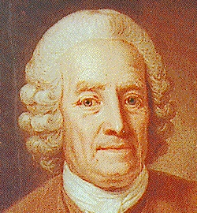

|
 |
Emanuel Swedenborg (1688-1772)
En av Sveriges stora genier, samtida med Linné och Polhem!
Utdrag ur boken Om Andarnas Värld, av Swedenborg.
ISBN 91-7118-479-1
Understrykningar är tillagda i denna webtext för att betona viktiga slutsatser.
OM ANDARNAS VÄRLD
OCH MÄNNISKANS TILLSTÅND EFTER DÖDEN
ENLIGT VAD JAG HÖRT OCH SETT
AV EMANUEL SWEDENBORG
Att människan efter döden
är i besittning av alla sina sinnen
och av varje minne, tanke och
känsla som hon åtnjöt i världen
och att hon inte lämnar
någonting kvar utom
sin jordiska kropp.
41. Av mångfaldig erfarenhet har jag blivit övertygad om att när människan övergår från den naturliga till den andliga världen, vilket sker när hon dör, tar hon med sig allt hon äger eller allt som tillhörde henne som människa utom sin jordiska kropp. När människan inträder i den andliga världen eller i livet efter döden är hon visserligen i en kropp såsom i världen. Till utseendet är det ingen skillnad, ty hon varken känner eller ser någon skillnad. Men hennes kropp är [nu] andlig och alltså skild eller renad från det jordiska, och när det andliga vidrör eller ser det andliga är det precis som när det naturliga vidrör och ser det naturliga. När människan blivit en ande vet hon följaktligen inte något annat än att hon är i samma kropp som hon var i världen och vet därför inte att hon har avlidit.
(2) Människoanden kan också glädja sig åt att hon är i besittning av varje såväl yttre som inre sinne som hon åtnjöt i världen. Hon ser som förut, hör och talar som förut, har också lukt- och smakförnimmelser och känner när hon vidrörs som förut. Hon längtar, åstundar , har begär, tänker, reflekterar, påverkas, älskar och vill som förut, och den som finner nöje i studier läser och skriver som förut. Kort sagt, när människan övergår från det ena livet till det andra eller från den ena världen till den andra är det som om hon gick från ett ställe till ett annat, och hon för med sig allt som hon äger i sig som människa, så att det inte kan sägas att människan efter döden, som blott är den jordiska kroppens död, har förlorat något av det som tillhör henne.
(3) Hon för också med sig sitt naturliga minne, ty allt som hon i världen hört, sett, läst, lärt och tänkt alltifrån från den tidigaste barndomen till livets slut finns kvar. Men då den naturliga verklighetens händelser och föremål inte kan det återkallas i minnet i den andliga världen, så ligger de förr oanvända såsom fallet är hos människan när hon inte tänker på dem. Likväl kan de återkallas när det behagar Herren. Men om detta minne och dess tillstånd efter döden kommer mer att sägas längre fram. Att människans det tillstånd efter döden är sådant kan en sinnlig människa alls inte tro, eftersom hon inte kan föreställa sig det. En sinnlig människa kan nämligen inte tänka annat än på ett naturligt sätt ens om andliga ting. Det som hon inte uppfattar med sina sinnen, det vill säga ser med kroppens ögon och vidrör med händerna. säger hon därför att det inte finns, såsom man kan läsa om Tomas (Joh 20: 25, 27, 29). Hurdan den sinnliga människan är kan man se i verket Om himlen och helvetet (nr 267 och i noterna där).
42 a. Det är emellertid en stor skillnad mellan människans liv i den andliga världen och hennes liv i den naturliga världen, såväl med hänsyn till de yttre sinnena och deras känslor som till de inre sinnena och deras känslor. De som är i himlen har mera utsökta sinnen, det vill säga, de ser och hör mycket fullkomligare och tänker också med större vishet än när de var i världen. De ser nämligen i himlens ljus, som i hög grad övergår världens ljus (se verket Om himlen och helvetet, nr 126). De hör dessutom med hjälp av en andlig atmosfär, som också i hög grad övergår den jordiska (Om himlen och helvetet, nr 235). Denna skillnad mellan de inre och de yttre sinnena är liksom skillnaden mellan strålande solsken och mörker från tunga regnmoln i världen och såsom mellan ljuset mitt på dagen och aftonens skugga. Himlens ljus, som är det Gudomliga sanna, skänker nämligen änglarna en synförmåga som kan uppfatta och urskilja det allra minsta.
(2) Deras yttre synförmåga motsvarar också deras inre synförmåga eller förstånd, ty hos änglarna inflyter den ena förmågan i den andra, så att de verkar som ett, och det är detta som skänker dem en så underbar skarpsynthet. På ett liknande sätt motsvarar också deras hörsel deras förnimmelseförmåga, som hör till både förståndet och viljan. Därför märker de såväl på rösten som på orden hos den som talar de finaste nyanserna i dennes känslor och tankar , på rösten nyanserna av hans känslor och på orden nyanserna av hans tankegång (se verket Om himlen och helvetet, nr 234-245). De övriga sinnena hos änglarna är dock inte så högt utvecklade som synen och hörseln, och detta av den orsaken att synen och hörseln tjänar deras intelligens och vishet, men det gör inte de andra sinnena. Om dessa vore lika högt utvecklade skulle de ta bort klarheten och glädjeförnimmelsen i änglarnas vishet och framkalla en sådan känsla av nöje i sinnliga lustar och fröjder som hör till olika slags begär och till kroppen och som fördunklar och försvagar förståndet i samma mån som de får överhand. Så sker ju också hos människorna i världen, som blir slöa och dumma med avseende på andliga sanningar i samma mån som de överlämnar sig at smaksinnets och det kroppsliga känselsinnets lockelser.
(3) Att också de inre sinnena hos himlens änglar, som tillhör deras tanke och känsla, är högre utvecklade och fullkomligare hos dem än när de var i världen framgår uppenbart av det som blivit sagt och visat i kapitlet om Visheten hos himlens änglar (se verket Om himlen och helvetet, nr 265-275). Vad däremot angår tillståndet hos dem som är i helvetet i förhållande till deras tillstånd när de var i världen så är skillnaden också stor, ty så stor som fullkomligheten och förträffligheten av de yttre och inre sinnena hos änglarna i himlen är, så stor som ofullkomligheten hos dem som är i helvetet. Men om deras tillstånd kommer det att handla i verket Om himlen och helvetet, i den del som handlar om helvetet.
42 b. Att människan faktiskt tar med sig hela sitt minne från världen har visats mig på många olika sätt, och jag har både fått se och höra många nämnvarda saker om detta, som jag nu skall berätta om i tur och ordning. Det var några som förnekade de brott och utsvävningar som de hade gjort sig skyldiga till i världen, och för att de inte skulle tro sig vara oskyldiga avslöjades och uppräknades från deras minne alla deras handlingar i tur och ordning från deras första till deras sista år. Det handlade huvudsakligen om äktenskapsbrott och otukt.
(2) Det fanns de som hade bedragit andra genom fula och knep och stulit. Deras listiga tillvägagångssätt och tillgrepp uppräknades i tur och ordning, av vilka många och knappast var kända av någon människa i världen utom av dem själva. De till och med erkände dem därför att de hade blivit uppenbarade liksom i klar belysning tillika med den tanke, avsikt, känsla av nöje eller fruktan, som om då samtidigt hade behärskat deras sinnen.
(3) Det fanns åter andra som hade tagit emot mutor och skaffat sig fördelar under sitt domarämbete. Dessa blev om likaledes utforskade med utgångspunkt från sitt minne. Ur detta återgavs då allt som inträffat från den första till den sista dagen av deras ämbetsutövning. Alla detaljer blottades: hur mycket och vad de tagit emot i mutor, tidpunkterna när det skett, deras sinnestillstånd och avsikt. Allt återkallades ur deras minne och framställdes synligt för dem, och deras brottsliga gärningar uppgick till ett antal av flera hundra. Detta skedde med flera av dem. Vad som då var märkligt var att också deras minnesböcker öppnades och lästes upp inför dem sida efter sida.
(4) Det fanns ännu andra som förfört jungfrur till otukt jag och skändat deras kyskhet, och de kallades till en liknande dom, och alla därmed förknippade detaljer drogs fram ur deras minne och lästes upp. Till och med ansiktena på de jungfrurna och kvinnorna framställdes precis som om de var personligen närvarande. Även platserna där förförelserna skedde, tillika med samtalen och sinnesstämningarna, återkallades i minnet, och allt detta så oförmodat som när något [plötsligt] framställs till åskådande. Dessa avslöjanden varade ibland flera timmar.
(5) Det var en person som inte tyckte att det gjorde något om man förtalade andra. Jag hörde hans smädelser upprepas i tur och ordning och med just de ord han hade använt. Jag fick också höra om vilka och inför vilka personer de fälldes. Alltsammans återgavs och framställdes på ett livfullt sätt inför honom, fastän han omsorgsfullt hade dolt det medan han levde i världen.
(6) En annan person åter hade under falsk förevändning berövat en släkting dennes arv. Också denna person blev liksom den föregående förklarad skyldig och dömd och - vad som är värt att besinna - de brev och skrivelser som utväxlats mellan dem lästes också upp för mig, och det sades mig att inte ett enda ord i denna skriftväxling fattades.
(7) Samma person hade också strax före sin död förgiftat sin granne. Detta avslöjades på följande sätt. Han sågs gräva en grop i marken under fötterna, och när den var färdig kom en man upp ur den som ur en grav och ropade till honom: "Vad har du gjort med mig?" Därefter avslöjades allt: hur giftblandaren hade talat vänskapligt med honom och räckt honom bägaren, och även vad han i förväg tänkt och vad som sedan hände. Efter detta avslöjande dömdes han till helvetet.
(8) Sammanfattningsvis kan man alltså säga att alla onda handlingar -missdåd, rån, bedrägerier och andra vilseledande handlingar - helt enkelt dras fram ur minnet hos varje ond ande och visas fram för honom. Så överbevisas onda andar om sin skuld. Någon möjlighet att förneka den har de inte, eftersom alla de omständigheter som är förknippade med brotten presenteras i ett sammanhang. Jag har, medan änglar betraktat och noga granskat minnet hos en människa, fått erfara vad den människan dag för dag tänkte på i sitt stilla sinne, och detta utan varje misstag. Allt återkallades precis som det var den dag människan tänkte det.
(9) Av dessa exempel framgår det tydligt att människan tar med sig hela sitt minne och att intet kan så döljas i världen att det inte blir uppenbart efter döden, och detta i mångas närvaro enligt Herrens ord:
Det finns ingenting gömt som inte skall komma i dagen och ingenting dolt som inte skall bli känt.
Därför skall också det som ni har sagt i mörkret bli hört i dagsljuset, och det som ni har viskat i enrum skall ropas ut från taken. (Luk 12: 2, 3)
43. När en människas handlingar uppdagas efter döden, då granskar de änglar som har fått i uppdrag att företa undersökningen hennes ansikte, och de låter undersökningen utbreda sig över hela kroppen från och med fingrarna, först på den ena handen och sedan på den andra, och fortsätter därefter över resten av kroppen. Då jag förvånade mig över detta förklarades det så, att precis som alla tankens och viljans minsta detaljer är inskrivna i hjärnan, eftersom deras utgångspunkter är där, så är de också inskrivna på hela kroppen, emedan allt som tillhör tanken och viljan från sina utgångspunkter fortsätter ända ut i kroppen och utmynnar där som i sitt yttersta. Det är av denna anledning som det som är inristat i minnet från viljan och dess tanke icke blott är inskrivet i hjärnan utan också på hela människan och visar sig där i en ordning som överensstämmer med ordningen på kroppens delar. Av detta är det klart att människan är sådan i sin helhet som hon är med hänsyn till sin vilja och dess tillhörande tankeverksamhet, så att en ond människa är sitt eget onda och en god människa sitt eget goda.
Av detta kan man också få klart för sig vad som menas med människans livsbok, som det talas om i Ordet, nämligen just det att allt som hon har gjort och tänkt är inristat på hela människan och visar sig som läst ur en bok när det kallas fram ur minnet och som i en avbild när anden betraktas i himlens ljus. Till detta vill jag lägga följande anmärkningsvärda faktum beträffande fortvaron av människans minne efter döden, och som har befäst mig i övertygelsen att icke blott det stora hela utan också det allra minsta som ingår i minnet blir kvar och aldrig utplånas. Jag har i den andliga världen fatt se böcker försedda med tryckt skrift precis som i världen. Det sades mig att innehållet i dessa återgivits ur minnet hos dem som författat böckerna i världen och att det inte fattades ett enda ord i någon av de böcker som sålunda skrivits av samme författare i världen. Även de minsta detaljerna kunde alltså dras fram ur en persons minne, ja, till och med de som han hade glömt i världen.
Även orsaken till detta avslöjades, nämligen att människan har både ett yttre och ett inre minne. Ett yttre som tillhör hennes naturliga människa och ett inre minne som tillhör hennes andliga människa. Det avslöjades också att allt, även i minsta detalj, som människan har tänkt, velat, sagt och gjort och även allt som hon har hört och sett är inskrivet i hennes inre eller andliga minne, ävensom att allt som finns där, som ovan framhållits, aldrig någonsin utplånas, eftersom det är skrivet såväl på själva anden som på hans olika kroppsdelar, och att människans ande följaktligen har formats i full överensstämmelse med hennes handlingar och tankar. Jag vet att allt detta låter som en paradox och därför är svårt att tro, men icke desto mindre är det sant. Ingen bör därför tro att det finns något som människan har tänkt inom sig eller gjort i hemlighet som kan döljas efter döden, utan man kan vara övertygad om att allt, stort som smått, då kommer att framstå i öppen dag.
44. Trots att det yttre eller naturliga minnet finns kvar hos människan efter döden, så återkallas ändå inte i det andra livet de rent naturliga minnena som finns däri, utan blott de andliga realiteter som genom motsvarigheter har en anknytning till dem. När dessa framställs till beskådande visar de sig dock i exakt samma form som i den i naturliga världen. Allt som finns i himlarna ser nämligen likadant ut som i världen, fastän det till sitt väsen inte är naturligt utan andligt (såsom klart framgår i kapitlet Om förebildningar och apparanser* (Apparans = hur något ter sig, företeelse, företeelseform) i himlen i verket Om himlen och helvetet, nr 170-176).
(2) I den mån som de minnen som finns i det yttre eller naturliga minnet hämtar något från det materiella, och från tid och rum och från resten av de ting som kännetecknar naturen, tjänar de dock inte till samma nytta för anden som de gjorde i världen. Under jordelivet - när människan tänker från ett yttre sinnligt minne, och inte samtidigt från ett inre eller av förståndet styrt sinnligt minne - tänker hon nämligen på ett naturligt och inte på ett andligt sätt. I det andra livet, när anden befinner sig i den andliga världen, tänker han däremot inte på ett naturligt utan på ett andligt sätt. Att tänka på ett andligt sätt är att tänka förståndigt eller förnuftigt. Det är därför som det yttre eller naturliga minnet med avseende på dess materiella innehåll då blir overksamt, och endast det som människan har lärt sig med hjälp av det materiella innehållet och gjort till något förnuftigt blir till nytta. Att det yttre minnet blir overksamt med avseende på dess materiella innehåll beror på att detta inte längre kan framkallas. Ty änglar och andar talar från de känslor och de därav uppkommande tankarna som tillhör deras sinne. Därför kan de inte uttala något som inte överensstämmer med dessa sina känslor och tankar, såsom framgår av det som sagts i kapitlet Om änglarnas sätt att tala och i kapitlet Om änglarnas sätt att tala med människan (i verket Om himlen och helvetet, nr 234-257).
(3) Det är till följd av det ovan sagda som människan efter döden är förnuftig i samma mån som hon genom språk och vetenskap har blivit förnuftig och inte i den mån som hon varit kunnig i dem. Jag har talat med många som i världen ansågs vara lärda därför att de kände till forna tiders språk, såsom hebreiska, grekiska och latin, men som inte hade odlat sitt förnuft genom det som skrivits på dessa språk. En del av dem visade sig vara lika enfaldiga som de som inte hade någon kunskap i dessa språk. Och en del av dem verkade [till och med] dumma. Men ändå fanns det hos dem kvar en uppblåsthet som om de vore visare än andra.
(4) Jag har talat med somliga som när de levde i världen trodde att människan är vis i proportion till vad hon håller i minnet, och som därför hade samlat en mängd kunskaper i minnet, De talade nästan uteslutande från dessa kunskaper, alltså inte från sig själva utan från andra, och sitt förnuft hade de alls inte förkovrat genom minneskunskaperna. En del av dem var dumma, andra så enfaldiga att de var helt oförmögna att fatta om något var sant eller inte sant och tog fasta på alla falskheter som de som kallade sig lärda påstod vara sanningar. Av sig själva kunde de nämligen inte se huruvida något förhöll sig på ett visst sätt eller ej och följaktligen inte heller huruvida något som de hörde från andra var förnuftigt eller ej.
(5) Jag har också talat med några som när de levde i världen hade skrivit mycket, närmare bestämt i naturvetenskapliga ämnen av alla slag, och som därigenom hade blivit berömda i hela världen för sin lärdom. En del av dessa kunde för all del resonera om sanningar om de var sanna eller ej. Några av dem förstod faktiskt att sanningarna var sanna, när de vände sig till andra människor som var i sanningens ljus. Men de ville ändå inte själva förstå sanningarna, varför de förnekade dem när de var i sina egna falskheter och alltså i sig själva. Några av dem hade inte mer visdom än de som saknade utbildning. Sålunda skilde de sig sinsemellan från varandra i samma mån som de hade odlat sitt förnuft med de kunskaper som de hade skrivit om och nedtecknat. De däremot som var emot kyrkans sanningar och tänkte från vetenskapliga fakta och därigenom bekräftade sig i falskheter odlade inte sitt förnuft utan blott förmågan att resonera. Något som man i världen menar vara samma sak som att vara förnuftig Denna förmåga är dock någonting helt annat än förnuft.
Det är nämligen en förmåga att kunna bekräfta vadhelst där man vill och en föresats att på grund av förutfattade meningar och bedrägliga uppfattningar se till det som är falskt, men inte till det som är sant. Sådana människor kan aldrig förmås att erkänna sanningar. eftersom man aldrig kan se sanningar från falskheter. Men från sanningar kan man se vad som är falskt.
(6) Människans förnuft liknar en trädgård eller en blomstersäng eller en nyodling. Minnet är jordmånen, de sanningar som människan lär sig att känna till och förstå är fröna, och himlens ljus och värme är vad som får fröna att växa. Ty utan ljuset och värmen kan de inte gro. Så förhåller det sig också om inte himlens ljus, som är det Gudomliga sanna, och himlens värme, som är den Gudomliga kärleken, får tillträde till människosinnet. Från dem allena kommer förnuftet. Änglarna är högeligen bedrövade över att de lärda till större delen tillskriver naturen allt och följaktligen har så tillslutit det inre av sitt sinne att de inte kan se något av det sanna i sanningens ljus, som är himlens ljus. De berövas därför i det andra livet sin förmåga att tänka förnuftigt och sänds till öde platser för att de inte genom sitt ordklyveri skall kunna så falska begrepp bland de enkla goda och därigenom förleda också dem.
45. Det var en ande som blev upprörd över att han inte kunde komma ihåg många av de saker som han så väl känt till under sitt liv i kroppen och sörjde över att han hade förlorat detta nöje som han njöt så mycket av. Det förklarades emellertid för honom att han visst inte hade förlorat något och att han bevarat alla, mer eller mindre viktiga, kunskaper som han haft i världen. Men att det i den värld där han nu var inte var tillåtet att påminna sig sådana saker. Det sades honom också att han borde vara tillfredsställd med att han nu kunde tänka och tala mycket bättre och fullkomligare än förut och att han inte längre fick nedsänka sitt förnuft i grova och otillförlitliga, materiella och kroppsliga ting, som inte var till någon nytta i det rike som han nu hade kommit till. Samt att han nu hade allt som var till nytta för det eviga livet och att det inte fanns något annat sätt än detta på vilket en människa kunde bli salig och lycklig. Ytterligare sades det att det är ett tecken på okunnighet att tro att människans intelligens inte längre existerar i det andliga riket, när det materiella innehållet i minnet trängts tillbaka och ligger, overksamt. Det förhåller sig ju faktiskt så att i den mån sinnet kan avledas från sådana sinnliga öre- ställningar som tillhör den yttre människan eller kroppen. I samma mån kan det lyftas upp till andliga och himmelska tänkesätt.
46. Hurdana människans minnen är framställs stundom synligt i det andra livet i former som endast förekommer där.
(Mycket som hos människan eljest inte framställs annat än i tankeföreställningar framställs där till beskådande). Det yttre minnet framställs där som en förhårdnad i huden, det Inre minnet som en sådan märgsubstans som förekommer i den mänskliga hjärnan. Av detta kan man förstå hurdana dessa minnen är. Hos dem som under kroppslivet endast vinnlagt sig om minneskunskaper, och därför inte odlat sitt förnuft, ser förhårdnaden tjock och grov ut och inuti liksom strimmad med senor. Hos dem som har uppfyllt minnet med falskheter ser förhårdnaden hårig och tovig ut, och detta på grund av det virrvarr av minnessaker som finns i minnet. Hos dem som övat upp ska sitt minne på grund av kärlek till sig själva och världen ser den hopklibbad och benhård ut. Hos dem som velat intränga i Gudomliga arkana med hjälp av vetenskapliga, och särskilt filosofiska studier, och inte velat tro förrän de ser med hjälp av dessa studier vunnit övertygelser [det till yttre] minnet mörkt ut och av en sådan beskaffenhet att det absorberar ljustrålarna och vänder dem i mörker. Hos de svekfulla och skrymtaktiga ser det hårt och benartat ut som ebenholts som återkastar ljusets strålar. Hos dem som däremot som varit i det goda som hör till kärleken och i det sanna som hör till tron syns inte någon sådan förhårdnad, därför att deras inre minne släpper igenom ljusstrålarna till det yttre minnet i vars föremål eller föreställningar strålarna utmynnar såsom i sin bas eller grund och tas emot med välbehag. Det yttre minnet är nämligen det yttersta av ordningen, vari, när det som är gott och sant finns där, andliga och himmelska ting mynnar ut och finner en hemvist.
47. De människor som är i kärlek till Herren och till sin nästa omger sig med och har inom sig, redan medan de lever i världen, en änglalik förståndighet vishet, men den är dold i det innersta av deras inre minne. Denna förståndighet och vishet kan dock aldrig uppenbara sig för dem förrän de avlägger det kroppsliga. Då försänks det naturliga minnet i slummer och människorna väcks upp i sitt inre minne och därefter så småningom till och med i änglaminnet.
48. Hur det av förnuftet styrda minnet kan uppodlas skall också i korthet förklaras. Det äkta förnuftet består av sanningar och ej av falskheter. Det som består av falskheter är inte förnuft. Det finns tre slag av sanningar: samhällslivets, det moraliska livets och det andliga livets sanningar.
De sanningar som rör samhällslivet hänför sig till sådant som har att göra med ett lands rättsväsende och dess styrande och förvaltande organ och i allmänhet med vad som är rätt och billigt.
Det moraliska livets sanningar hänför sig till allt som rör en människas [personliga] liv i dem sitt förhållande till sina medmänniskor och i sitt umgängesliv, och i största allmänhet hänför de sig till vad som är hederligt och rättskaffens, särskilt med avseende på alla slags dygder. Det andliga livets sanningar hänför sig däremot till allt som rör himlen och kyrkan, det vill säga i allmänhet till det goda som hör till kärleken och det sanna, det som hör till tron.
(2) Hos varje människa finns det tre livsgrader (se och verket Om himlen och Helvetet, nr 267). Det av förnuftet styrda minnet öppnas till den första graden av samhällslivets sanningar, till den andra graden av de moraliska sanningarna och till den tredje graden av de andliga sanningarna. Man bör dock veta att det av förnuftet styrda men minnet inte formas och öppnas av dessa sanningar genom att man känner till dem, utan genom att människan lever i överensstämmelse med dem. Med att leva efter dessa sanningar menas att älska dem på grund av en andlig tillgivenhet för dem, och att älska dem på grund av en andlig tillgivenhet för dem är att älska det som är rätt och billigt därför att det är rätt och billigt, det hederliga och rättvisa därför att det är hederligt och rättvist, och det goda och sanna därför att det är gott och sant. Att leva i överensstämmelse med sanningarna och älska dem på grund av en kroppsligt materialistisk inställning är däremot att älska dem för sin egen skull, för sitt goda ryktes, också sin äras eller sin vinnings skull. I den mån som en människa älskar sanningarna på grund av en kroppsligt materialistisk inställning blir hon därför inte förnuftig, ty det är andra då inte sanningarna hon älskar utan sig själv varigenom enkel sanningarna i så fall tjänar henne som tjänare betjänar sin genom herre. Därtill kommer att när sanningar blir tjänstehjon har de inte något inflytande på människan och öppnar inte någon av hennes livsgrader- inte ens den första- utan stannar blott såsom kunskaper i minnet under en materiell form och förbinder sig med självkärleken som är en kroppslig kärlek.
(3) Av det ovan sagda framgår det nu uppenbart hur det människan blir förnuftig, nämligen att hon blir det till den tredje graden genom en andlig kärlek för det goda och som det sanna som hör till kyrkan och himlen, till den andra graden genom en kärlek för det som är hederligt och rätt och till den första graden genom en kärlek för det som är rättvist och billigt. Också dessa två sistnämnda kärleksarter blir andliga genom en andlig kärlek för det goda och sanna, ty denna kärlek inflyter i dessa kärleksarter och förbinder sig med dem och formar i dem så att säga sin egen avbild.
49. Andar och änglar har precis som människorna ett minne. Ty vadhelst de hör, ser, tänker, vill och gör stannar kvar hos dem, och därigenom uppodlas också deras förnuft och detta i all evighet. Det är till följd av detta som andar och änglar, på samma sätt som människor, fullkomnas i intelligens och vishet genom kunskaper om det sanna och det goda. Att änglarna och andarna har ett minne har jag också av mycken erfarenhet fått lära mig. Ty jag har sett att allt vad de tänker och gör, såväl öppet som i hemlighet, framkallas ur deras minne när de är tillsammans med andra andar.
Jag har också sett andar, som på grund av enkel godhet var i sanning, bibringas kunskaper och genom kunskaperna förståndighet, och att de efteråt upplyftes till himlen. Man bör emellertid vara på det klara med att de inte bibringas kunskaper och genom kunskaperna förståndighet i större utsträckning än i graden av sin känsla för det goda och sanna som de hade i världen, och inte utöver denna. Hos varje ande och ängel stannar nämligen en lika stark och likadan känsla för det goda och det sanna kvar som han eller hon hade i världen, och denna känsla fullkomnas därefter genom att kompletteras, något som pågår i evighet. Det finns nämligen inte något som inte kan göras mera fullständigt i evighet, ty allt kan varieras i det oändliga och alltså berikas med alla möjliga tillskott och på så sätt mångfaldigas och göras fruktbart. Det finns inte någon gräns på det goda, eftersom det kommer från den Oändlige. Att andar och änglar genom kunskaper om det goda och det sanna oupphörligen fullkomnas med avseende på sin förståndighet och vishet kan man se i kapitlet Om visheten hos himlens änglar i verket Om himlen och helvetet, (nr 265-275), i kapitlet Om hedningarna och folken utanför kyrkan i himlen, (nr 318--328), i kapitlet Om små barn i himlen, (nr 329-345), och att detta fullkomnande sker i proportion till känslan för det goda och det sanna och icke utöver den, (nr 349).
VI
Att människan efter döden är sådan som hennes liv var i världen.
50. Varje kristen vet från Ordet att människans liv efter döden förblir likadant som det var i världen. Det sägs nämligen på många Ställen i Ordet att människan kommer att dömas och vedergällas efter sina gärningar och verk. Var och en som tänker med utgångspunkt från det goda och den verkliga sanningen ser inte heller annat än att den som för ett gott liv kommer till himlen och att den som för ett dåligt liv kommer till helvetet. Den som är i det onda vill dock inte tro att hans tillstånd efter döden blir i enlighet med hans liv i världen, utan tror, särskilt när han är sjuk, att himlen tilldelas var och en av ren barmhärtighet, oavsett hur han har levat, och att detta sker i enlighet med en tro skild från livet.
51. Att människan kommer att dömas och vedergällas efter sina gärningar och verk förklaras på många ställen i Ordet, av vilka jag vill anföra ett fåtal:
Människosonen skall komma i sin Faders härlighet med sina änglar, och då skall han vedergälla var och en efter hans gärningar (Matt 16:27).
Saliga är de döda som dör i Herren...Ja, säger Anden, de skall få vila från sina mödor, ty deras gärningar följer med dem (Upp 14:13).
Jag skall ge var och en efter hans gärningar (Upp 2:23).
Jag såg de döda, låga och höga, stå inför Gud, och böckerna öppnades… Och de döda dömdes efter vad som stod i böckerna, efter sina gärningar. Och havet gav tillbaka de döda som var i det, och döden och helvetet gav tillbaka de döda som var i dem, och var och en dömdes efter sina gärningar (Upp 20:12,13).
Se, jag kommer… och har med mig min lön för att ge var och en efter hans gärningar (Upp 22:12).
Var och en som hör mina ord och handlar efter dom vill jag likna vid en klok man…, men var och en som hör mina ord och inte handlar efter dem är att likna vid en dåre (Matt 7:24,26).
Inte alla som säger 'Herre, Herre' till mig skall komma in i himmelriket, utan bara de som gör min himmelske Faders vilja. På den dagen skall många säga till mig: 'Herre, herre, har vi inte profeterat i ditt namn och drivit ut demoner i ditt namn och gjort många underverk i ditt namn? Men då skall jag säga till dem: 'Jag känner er inte. Gå bort ifrån mig, ni ogärningsmän' (Matt 7:21-23).
Då skall ni börja säga: 'Vi har ätit och druckit tillsammans med dig, och du har undervisat på våra gator. Men han skall säga: 'Jag säger eder: Jag känner er inte…ni ogärningsmän' (Luk 13:25-27).
Jag skall vedergälla dem efter deras gärningar och efter deras händers verk (Jer 25;14).
Ack Herre Jehovah...du vilkens ögon är öppna över alla en människas vägar, så att du giver åt var och en efter hans vägar och efter hans gärningars frukt (Jer. 32:19).
Jag skall hemsöka honom för hans vägar och för hans gärningar skall jag vedergälla honom (Hos 4:9).
Jehovah...gör med oss efter våra vägar...och handlar med oss efter våra gärningar (Sak 1:6).
Där Herren förutsäger den yttersta domen uppräknar han inte något annat än gärningar och säger att de skall ingå i det eviga livet som har gjort goda gärningar medan de skall ingå i fördömelse som har gjort onda gärningar (Matt 25:32-46).
Jämte många andra ställen där det handlar om människans frälsning och fördömelse. Att verk och gärningar utgör människans yttre liv och att det är genom dem som karaktären på hennes inre liv avslöjas, är uppenbart.
52. Med gärningar och verk avses emellertid icke blott äga gärningarna och verken som de framstår till sin yttre form utan också till sin inre form. Var och en vet ju att varje gärning och verk utgår från människans vilja och tanke, ty om de inte utgick från dem skulle de inte vara annat än en sådan rörelse som görs av automater och vålnader. En gärning eller ett verk är därför egentligen ingenting annat mer än en verkan som härleder sin själ och sitt liv från viljan och tanken, och detta till den grad att en gärning eller ett och verk inte är något annat än vilja och tanke i verksamhet, det vill säga vilja och tanke i yttre form. Av detta följer att sådan som den vilja och den tanke är som ger upphov till gärningen eller verket, sådan är också gärningen och sådan är verket. Om tanken och viljan är goda, så är också gärningen och verket goda, men om tanken och viljan är onda är också gärningen och verket onda, även om de till sin yttre form ser likadana ut. Tusen människor kan nu handla på samma sätt, det vill säga utföra likadana gärningar, ja, så lika att man till den yttre formen knappast kan skilja dem åt, och dock är varje handling i sig betraktad olik varje annan handling, därför att den kommer från en annorlunda vilja.
(2) Tag som ett exempel att handla hederligt och rättvist mot sin medmänniska. Den ene kan handla hederligt och rättvist mot medmänniskan för att han för sin egen och sin personliga äras skull skall framstå som hederlig och rättvis. En annan gör det för världens och vinningens skull, en tredje för belöningens och meritens skull, en fjärde för vänskapens skull. En femte handlar hederligt och rättvist av fruktan för lagen eller fruktan att förlora sitt goda namn och rykte eller sin ställning, en sjätte för att locka över en annan på sin sida, även om hans egen inställning är ond, och en sjunde för att bedra. Och det finns andra som handlar hederligt och rättvist av ännu andra orsaker. Men trots att alla dessa handlingar ser goda ut - ty det är gott att handla hederligt och rättvist mot sin medmänniska - så är de icke desto mindre onda, eftersom de icke görs för hederlighetens och rättvisans skull och därför att man älskar hederlighet och rättvisa- utan görs för sin egen och världens skull och därför att man älskar sig själv och världen. Hederligheten och rättvisan tjänar då kärleken till sig själv och världen såsom tjänstefolk tjänar sin herre, och vilka denne ringaktar och avskedar när de inte tjänar honom.
(3) Också de som av kärlek till det hederliga och rättvisa handlar hederligt och rättvist mot sin medmänniska ser i yttre avseende ut att handla på samma sätt som de nyss nämnda. En del av dem handlar från den sanning som tillhör tron eller handlar av lydnad, därför att Ordet bjuder dem att göra det. Andra handlar från det goda som tillhör tron eller av samvete, eftersom de handlar av religiösa bevekelsegrunder. Ännu andra handlar av kärlek till sin nästa, eftersom man bör lägga sig vinn om dennes bästa. Återigen andra handlar utifrån det goda av kärlek till Herren därför att det goda bör göras för det godas skull, och därför handlar de också hederligt och rättvist för i hederlighetens och rättvisans skull, och dessa dygder älskar de därför att de kommer från Herren och därför att det en Gudomliga som utgår från Herren finns i dessa dygder och eftersom de därför, om man betraktar dem till sitt egentliga väsen, är Gudomliga. Sådana människors handlingar och verk är till det inre goda och därför också till det yttre goda, ty, som ovan framhållits, en människas handlingar och verk är just sådana som den tanke och vilja som de nu utgår från, och utan tanken och viljan är de inte handlingar och verk utan blott livlösa rörelser. Av detta framgår det nu vad det är som i Ordet avses med "verk" och "gärningar".
53. Eftersom en människas gärningar och verk kommer från viljan och tanken, så kommer de också från kärleken och tron. Det är därför som de är sådana som kärleken och tron är, ty vare sig man talar om människans kärlek eller hennes vilja, så är det samma sak, och vare sig man talar om en människas tro eller hennes bestämda tanke, så är det samma sak. Vad en människa älskar, det vill hon nämligen också, och vad en människa tror, det tänker hon också, och om en människa älskar vad hon tror, då vill hon det också, och i den mån det är möjligt gör hon det.
Var och en har förmåga att inse att kärlek och tro innebor i människans vilja och tanke och inte förekommer utan dessa, ty det är viljan som upptänds av kärleken, och det är tanken som får upplysning i trosfrågor. Det är av denna anledning som inga andra än de som kan tänka vist blir upplysta och i enlighet med sin upplysning tänker och vill det som är sant eller, vad som är samma sak, tror på och älskar det sanna.
54. Man bör emellertid veta att det är viljan som bildar människan och att tanken gör det endast i den mån som den utgår från viljan, samt att gärningar och verk utgår från båda eller, vad som är detsamma, att det är kärleken som bildar människan och att tron gör det endast i den mån som den utgår från kärleken, samt att gärningarna och verken utgår från båda. Av detta följer att viljan eller kärleken är själva människan, ty det som utgår tillhör den som det utgår ifrån. Att utgå är detsamma som att skapas och framställas i en form som lämpar sig till att uppfattas och bli synlig. Av detta kan man fastställa vad tro skild från kärlek är, att den i själva verket inte är någon tro utan blott ett vetande, som inte har något andligt liv i sig. Man kan också fastställa vad en gärning eller ett verk utan kärlek är, nämligen att det inte heller är någon gärning ~ något verk som tillhör livet utan en gärning eller ett verk som tillhör döden, och som blott har skenbarhet av liv på grund av en ond kärlek och en falsk tro. Det är denna skenbarhet av liv som kallas andlig död.
55. Vidare bör man veta att hela människan uppenbarar sig i gärningarna eller verken samt att hennes vilja och tanke eller hennes kärlek och tro, som hör till den inre människan, inte är fullständiga förrän de är i gärningar och verk, som hör till den yttre människan. Gärningarna och verken är nämligen det yttersta vari viljan och tanken eller kärleken och tron utmynnar, och utan sådana yttringar skulle de vara som något oavslutat som ännu inte blivit till och alltså ännu inte är i människan. Att tänka och vilja utan att handla, när det är möjligt, är som en i ett kärl innesluten låga som kvävs eller som sädeskorn som kastas ut i sanden och inte växer ut, utan vars alstringskraft förgås. Men att tänka och vilja och att som en följd därav handla är som en låga som sprider värme och ljus omkring sig, och det är också liksom ett frö i jorden, som växer upp till ett träd eller en blomma och fortsätter att växa. Var och en kan inse att det att vilja något och inte göra det, när det är möjligt, är detsamma som att inte vilja det, och att det att älska och inte göra det goda, när det är möjligt, är detsamma som att inte älska det goda. Det är blott en tanke på att vilja och älska, vilket är en från kärleken skild tanke, som upplöses och förskingras om den inte verkställs. Kärleken och viljan är själva själen hos en gärning eller ett verk och skapar sig en egen kropp i de hederliga och rättskaffens handlingar som en människa utför. Den andliga kroppen eller den kropp som tillhör människans ande kommer inte från något annat ursprung, det vill säga den bildas inte av något annat än det som människan gör utav sin kärlek eller vilja (se ovan, nr 43). Kort sagt, allt som tillhör människan och hennes ande har sin existens i hennes gärningar och verk.
56. Av det som sagts i närmast föregående stycken kan man nu göra klart för sig vad som menas med det liv som människan bibehåller efter döden, nämligen att det består i hennes kärlek och därtill hörande tro, icke blott med hänsyn till deras inneboende kraft utan också med hänsyn till den verkliga handlingen; med andra ord, att livet består i gärningarna eller verken, därför att dessa inom sig rymmer allt som hör till människans kärlek och tro.
57. Det är den förhärskande kärleken som stannar kvar hos människan efter döden, och denna förändras inte heller någonsin i all evighet. Varje människa har många olika slag av kärlek, men alla dessa olika slag av kärlek står likväl i samband med människans förhärskande kärlek och bildar med denna en enhet eller tillsammans konstituerar den. Alla de viljans olika element som överensstämmer med den förhärskande kärleken har också fått benämningen kärlek, eftersom dessa arter av kärlek älskas. Dessa kärleksarter är både inre och yttre. Det finns de som är omedelbart förbundna med den förhärskande kärleken och i de som är medelbart förbundna med den. Det finns de som är närmare förbundna med den, och de som är mer avlägset förbundna med den. De är alla tjänande under den förhärskande kärleken på olika sätt. Tillsammans bildar de liksom ett rike, ty det är så de är ordnade hos människan, även om människan alls inte vet något om denna anordning. Dock uppenbaras något av denna ordning för henne i det andra livet, ty det är i enlighet med hur människans kärleksarter är anordnade som hennes tankar och känslor kan sträcka sig vida omkring där- till himmelska samhällen om hennes förhärskande kärlek består av sådana kärleksarter som tillhör himlen, men till helvetiska samhällen om hennes förhärskande kärlek består av sådana kärleksarter som hör till helvetet. Att all tankeverksamhet och känsloinställning hos andar och änglar sprider sig vida omkring till de olika samhällena kan man se i verket Om himlen och helvetet i kapitlet Om visheten hos himlens änglar och i kapitlet Om himlens form och dess inverkan på änglarnas sätt att umgås och dela med sig.
58. Det som hittills sagts påverkar emellertid endast tanken hos den förnuftiga människan. För att det också skall framstå för hennes förmåga att uppfatta det med sinnena vill jag här dessutom framlägga några erfarenheter varigenom det kan belysas och bestyrkas: För det första, att människan efter döden är sin karakteristiska kärlek eller vilja. För det andra, att människan i evighet förblir sådan hon är med hänsyn till den för henne karakteristiska viljan eller förhärskande kärleken. För det tredje, att den människa som har en himmelsk och andlig kärlek kommer till himlen, och att den som har en kroppsligt materialistisk och världslig kärlek utan att samtidigt ha en himmelsk och andlig kärlek kommer till helvetet. För det fjärde, att tron inte stannar kvar hos människan om den inte kommer från en himmelsk kärlek. För det femte, att kärlek i handling är den kärlek som förblir och att den följaktligen är människans liv.
59. I. Att människan efter döden är sin karakteristiska kärlek eller vilja. Detta har genom mångfaldig erfarenhet bevisats för mig. Hela himlen är indelad i samhällen alltefter olikheterna i det goda som tillhör kärleken. Varje ande som lyfts upp till himlen och blir en ängel förs till det samhälle där hans kärlek är, och när han kommer dit är han så att säga hemma hos sig och liksom i det hus där han föddes. Detta förnimmer ängeln och sluter sig där till dem som liknar honom själv. När han beger sig därifrån och kommer till en annan ort känner han alltid ett visst motstånd och en längtan efter att få återförenas med sina kärlekar och alltså med sin förhärskande kärlek. Så upprättas liksom alla vänskapsförbindelser i himlen. Det förhåller sig också på ett liknande sätt i helvetet, där alla förbindelser sker i enlighet med kärleksarter motsatta de himmelska. (Att det finns samhällen som bildar himlen och likaså samhällen som bildar helvetet och att alla dessa samhällen är indelade i enlighet med sina olikheter med avseende på kärleken kan man se i verket Om himlen och helvetet, nr 41-50, 200--212).
(2) Att människan efter döden är sin karakteristiska kärlek kan man också inse av det förhållandet att allt som inte utgör ett med hennes förhärskande kärlek då avskiljes och så att säga avlägsnas från henne. Från den som är god avskiljes och så att säga avlägsnas allt oharmoniskt eller motstridande, och därigenom förs han in i sin personliga kärlek. Det förhåller sig på samma sätt med en onda ande, men med den skillnaden att från denne tas sanningarna bort, medan falskheterna tas bort från den som är god, och detta förtgår oavbrutet ända tills var och en blir sin egen kärlek. Detta skeende fullbordas när människoanden förs in i det tredje tillståndet efter döden, som kommer att beskrivas längre fram. När detta har skett vänder anden oavbrutet ansiktet hän mot sin personliga kärlek, som han ständigt har för ögonen vart han än vänder sig (se verket Om himlen och helvetet, nr 123, 124).
(3) Alla andar kan ledas vart som helst efter behag, om de bara hålls i sin förhärskande kärlek, och de är oförmögna att stå emot även om de vet att de leds och avser att göra motstånd. Trots att de många gånger fått försöka har de inte kunnat göra något som strider mot deras rådande kärlek. Deras kärlek är som ett band eller ett rep, som de liksom är bundna med och kan ledas med, men inte kan befria sig ifrån. Det förhåller sig på samma sätt med människorna i världen, som också leds av sin kärlek och genom sin kärlek leds av andra. Detta är emellertid än mer förhållandet när de blir andar, ty då är det inte tillåtet att föregiva en annan kärlek än den man har eller att låtsas en kärlek som inte är ens egen.
(4) Att en ande är en för honom karakteristisk förhärskande kärlek framgår klart av allt umgänge i det andra livet, ty i den mån någon handlar och talar i överensstämmelse med någon annans kärlek blir denne fullt synlig med sitt karakteristiska, glada och livliga ansiktsuttryck. Men i den mån någon handlar och talar i strid med den andres kärlek börjar dennes ansiktsuttryck att förändras och fördunklas och inte bli skönjbart, och till slut försvinner han helt och hållet som om han aldrig hade varit där. Jag har många gånger förvånat mig över att det förhåller sig så, eftersom något sådant inte kan förekomma i världen, men det har sagts mig att något liknande sker med anden i människan, som, när den vänder sig bort från anden i en annan människa, inte längre är i dennes åsyn.
(5) Att en ande är en för honom karakteristisk förhärskande kärlek framgår också av att varje ande snabbt tar i bruk och tillägnar sig allt som överensstämmer med sin kärlek och förkastar och förskjuter allt som inte överensstämmer med den. Varje människas kärlek är som poröst och svampaktigt trä, som suger upp sådana vätskor som befordrar dess tillväxt, men försmår alla andra. Denna kärlek är också lik alla slags djur, som känner sin föda och söker efter det som stämmer överens med sin natur och vänder sig bort från det som inte överensstämmer med den. Varje kärlek kräver också att få livnära sig på sin egen passande föda, en ond kärlek på falskheter och en god kärlek på sanningar. Jag har några gånger fått se hur vissa enkla goda andar ville undervisa några onda andar om vad som är sant och gott, men dessa flydde då långt bort, och när de kom till sina likasinnade kamrater tillägnade de sig snabbt och med stor begärlighet de falskheter som stämde överens med deras kärlek. Jag har också sett goda andar tala med varandra om sanningar , vilket också andra närvarande goda andar gärna åhörde, men som de närvarande onda andarna däremot alls inte brydde sig om, precis som om de inte hörde något. Man kan i andevärlden få se vägar, av vilka en del leder till himlen och andra till helvetet, och varje väg leder till ett bestämt samhälle. De goda andarna går inte på några andra vägar än de som leder till himlen och till det samhälle där som är i det goda som hör till deras karakteristiska kärlek. De vägar som går i en annan riktning ser de inte. De onda andarna däremot går inte på några andra vägar än de som leder till helvetet och till det samhälle där som är i det onda som hör till deras karakteristiska kärlek. De vägar som går i en annan riktning ser de inte, och om de ser dem vill de ändå inte gå på dem. Dessa vägar i den andliga världen är verkliga företeelser, som motsvarar sanningar eller falskheter, och det är därför som "vägar" i Ordet betecknar sanningar eller falskheter. Av dessa från erfarenhet hämtade vittnesbörd kan man befästa det som redan förut har påvisats med hjälp av förnuftet, nämligen att varje människa efter döden är en för henne karakteristisk kärlek och en för henne karakteristisk vilja. Det sägs "en för henne karakteristisk vilja" därför att det just är viljan hos varje människa som är hennes personliga kärlek.
60. II. Att människan i evighet förblir sådan hon är med hänsyn till den för henne karakteristiska viljan eller förhärskande kärleken. Också i detta har jag blivit befäst genom mycken erfarenhet. Jag har fått tala med några av de människor som levde för två tusen år sedan och vars liv beskrivs i historien och därigenom är känt. De befanns alltjämt vara sig lika och precis sådana som de beskrivits till och med avseende på den kärlek som de hade sitt liv ifrån och enligt vilken de levde. Jag har också fatt tala med några som levde sjutton sekler tillbaka i tiden och är kända från historien, och med åter andra som levde för fyra århundraden sedan och för tre århundraden sedan, och så vidare. Det befanns att samma känsloinställning som de hade i världen fortfarande rådde hos dem utan någon annan skillnad än att de förnimmelser av behag som hade sitt ursprung i deras kärlek hade vänts i motsvarande glädje- eller lustförnimmelser. Änglarna påstår att det liv, som tillhör den förhärskande kärleken aldrig i evighet förändras hos någon människa, eftersom var och en är sin unika kärlek. Att förändra den kärleken hos en ande är till därför detsamma som att beröva honom livet eller att utsläcka det. Änglarna har också förklarat orsaken till kär detta, nämligen att människan efter döden inte längre kan omdanas genom undervisning såsom i världen, eftersom hennes yttersta plan, som består av naturliga föreställningar och känslor, då blir overksamt, och att detta plan, eftersom det ej är andligt, då inte kan öppnas (se ovan, nr 44). De har ytterligare förklarat att på detta yttersta plan vilar, såsom ett hus på sin grund, alla de inre föreställningarna som tillhör människans sinne och håg, och att det är därför som människan i evighet förblir som hennes kärleks liv var i världen. Änglarna förvånar sig högeligen över att människan inte vet att var och en är sådan som hans förhärskande kärlek, och även över att många tror att de kan frälsas av omedelbar barmhärtighet och av blotta tron, oavsett hurdana de är med avseende på livet. De förvånar sig också över att människorna inte vet att den Gudomliga barmhärtigheten verkar genom medel, och att de inte heller vet att den består i att människan leds av Herren såväl i världen som efteråt i evighet, samt att de som inte lever i det onda leds av hans barmhärtighet. De förvånar sig slutligen över att människorna inte vet att tron är en tillgivenhet för sanningen och att den utgår från en himmelsk kärlek som kommer från Herren.
61. III. Att den människa som har en himmelsk och andlig kärlek kommer till himlen, och att den som har en kroppsligt materialistisk och världslig kärlek utan att [samtidigt] ha en himmelsk och andlig kärlek kommer till helvetet. Detta har blivit uppenbart för mig av alla som jag har sett upptagas till himlen eller nedkastas till helvetet. Alla som togs upp till himlen hade sitt liv från en himmelsk och andlig kärlek, men de som kastades ned till helvetet hade sitt liv från en kroppsligt materialistisk och världslig kärlek. Den himmelska kärleken består i att älska det goda, hederliga och rättvisa därför att det är gott, hederligt och rättvist och även av att från denna kärlek göra det som är gott , hederligt och rättvist. Därför lever de människor som älskar det goda, hederliga och rättvisa också ett gott, hederligt och rättvist liv, som är ett himmelskt liv. De som älskar det goda, hederliga och rättvisa för dess egen skull , och gör det och lever i enlighet med det, älskar också Herren över allt annat, därför att det goda, hederliga och rättvisa kommer från honom, och de älskar också sin nästa, därför att det goda, hederliga och rättvisa är den nästa som man bör älska. Den kroppsligt materialistiska kärleken däremot består i att älska det goda, hederliga och rättvisa icke för dess skull utan för sin egen skull och därför att man därigenom kan skaffa sig anseende, ära och vinning. I det goda, hederliga och rättvisa tänker dessa människor inte på Herren och sin nästa utan på sig själva och världen och finner nöje i att bedraga, och det "goda", "hederliga" och "rättvisa" som kommer från bedrägeri är [därför egentligen] något ont, ohederligt och svekfullt som de älskar i det [skenbart] goda, hederliga och rättvisa.
(2) Eftersom det alltså är olika slag av kärlek som bestämmer varje människas liv, undersöks alla med avseende på sin karaktär så snart som de efter döden ingår i andarnas värld och förbinds med dem som är i en likartad kärlek som de själva. De som är i en himmelsk kärlek förbinds med dem som är i himlen, och de som är i en kroppsligt materialistisk kärlek förbinds med dem som är i helvetet. Efter att ha gått igenom det första och andra tillståndet i andevärlden skiljs de också från varandra så att de inte längre vare sig ser eller känner igen varandra. Var och en blir då nämligen sin personliga kärlek, icke blott till det inre som hör till sinnet, utan också till det yttre som hör till ansiktet, kroppen och talet. Varje människa blir nämligen en avbild av sin karakteristiska kärlek även till det yttre. De som är i kroppsligt materialistiska kärleksarter ser grova, mörka, svarta och vanskapta ut, Men de som är i himmelska kärleksarter ser friska, ljusa, strålande och välskapta ut. De är också alldeles olika till sinnelag och tänkesätt. De som är himmelska med avseende på kärleken är.förståndiga och visa. Men de som är kroppsligt materialistiska är dumma och nästan fåniga.
(3) När man får tillfälle att ingående granska hur de som är i himmelsk kärlek tänker och känner, ter sig det inre av deras sinne som i ljus, hos en del i strålande ljus, och det yttre av sinnet förtonar i många fårger som hos regnbågar. Men det inre av sinnet hos dem som är i kroppsligt materialistisk kärlek ter sig, därför att det är så tillknäppt, som något svart, och hos en del av dem, som det inre av sinnet har varit i lömsk ondskefullhet, ter sig det inre av sinnet som ett dystert eldsken, medan det yttre av sinnet ter sig i en avskyvärd färg som är hemsk att skåda. (Det inre och yttre som tillhör människans sinne och håg framstår i den andliga världen till beskådande närhelst det behagar Herren).
(4) De som är i en kroppsligt materialistisk kärlek ser inte någonting i himlens ljus. Himlens ljus är för dem ett tjockt mörker, men ljuset i helvetet, som är som ljuset från glödande kol, är för dem som det klaraste ljus. I himlens ljus förmörkas också deras inre syn så till den grad att de blir som galna. Därför flyr de det och gömmer sig i grottor och hålor, och desto djupare ju fler falskheter från det onda det finns hos dem. De däremot som är i en himmelsk kärlek ser allt desto klarare och till och med på ett mer underbart sätt ju innerligare och djupare de kommer in i himlens ljus, och de förnimmer sanningar på ett alltmer förståndigt och visare sätt.
(5) De som är i en kroppsligt materialistisk kärlek kan över huvud taget inte leva i himlens värme, ty himlens värme är himmelsk kärlek, utan de lever i helvetets värme, som är en kärlek till att förfara grymt mot alla som inte gynnar en själv. Förakt för andra och känslor av fiendskap, hat och hämnd är lustkänslor som tillhör denna kärlek. När de är i dessa känslor är de i sitt egentliga liv och vet inte alls vad det är att göra gott mot andra från äkta godhet och för det godas egen skull, utan de vet endast vad det är att göra gott från det onda och för det ondas skull.
(6) De som är i en kroppsligt materialistisk kärlek kan inte ens andas i himlen. När en ond ande förs in i himlen kippar han efter andan som i dödsångest. De däremot som är i en himmelsk kärlek andas allt friare och lever ett allt fullkomligare liv ju längre in i himlen de befinner sig. Av allt detta framgår det uppenbart att det är den himmelska och andliga kärleken som ger upphov till himlen hos människan, eftersom allt som hör till himlen är inristat på dessa två kärleksarter, och det framgår lika tydligt att den kroppsligt materialistiska och den världsliga kärleken utan den himmelska och den andliga kärleken är vad som ger upphov till helvetet hos människan, eftersom allt som hör till helvetet är inskrivet på dessa två kärleksarter. Av allt detta är det också uppenbart att den kommer in i himlen som har en himmelsk och andlig kärlek, och att den kommer till helvetet som har en kroppsligt materialistisk och världslig kärlek utan [att samtidigt ha] en himmelsk och andlig kärlek.
62. IV. Att tron inte stannar kvar hos människan om den inte kommer från en himmelsk kärlek. Detta har jag genom mycken erfarenhet fått så klart för mig att om jag skulle anföra allt som jag har sett och hört om denna sak skulle det fylla en hel bok. Så mycket kan jag dock försäkra att det över huvud taget inte finns någon tro, och inte heller kan finnas någon, hos de människor som är i en kroppsligt materialistisk och världslig kärlek utan att samtidigt vara i en himmelsk och andlig kärlek. De äger blott en kunskap eller en intalelse om att något är sant, då ju en sådan kunskap och intalelse tjänar deras kärlek. Ganska många av dem som påstod att de hade en tro fördes till sådana som verkligen hade det, och när de hade fått tillfälle att dryfta denna sak med dem insåg de att de själva inte alls hade någon tro. De tillstod också senare att det att blott tro på sanningen och Ordet inte är någon tro, utan att tro är att älska det sanna av himmelsk kärlek och att vilja och göra det sanna av en inre tillgivenhet för det. Det förklarades också för dem att deras intalelse, som de kallade tro, blott liknade ljuset på vintern, i vilket ljus därför att det inte finns någon värme i det allt på jorden, betvingat av köld, stelnar och ligger under snön. Därför icke blott utsläcks hos dessa människor det ljus som kommer från den intalade tron, så snart det träffas av himlens ljus, utan det blir till och med som ett tjockt mörker, i vilket ingen ens kan se sig själv, och samtidigt blir då av denna anledning det inre av deras sinnen så förmörkat att de blir fullständigt oförmögna att förstå någonting, och omsider blir de som galna på grund av sina falska uppfattningar. Alla de sanningar som dessa människor lärt sig från Ordet och kyrkans lära och sagt sig tro på tas därför ifrån dem och i deras ställe uppfylls de med allt tänkbart falskt som överensstämmer med ondskan i deras liv. De får nämligen alla ge fria tyglar åt sin kärlek och de med kärleken överensstämmande falskheterna, och då hatar och vänder de sig bort från och följaktligen förkastar sanningarna, därför att dessa är oförenliga med falskheterna som kommer av det onda i vilket de är. På grund av all min erfarenhet av förhållandena såväl i himlen som i helvetet kan jag försäkra att de som på grund av läran har bekänt sig till tro allena och samtidigt varit i det onda med hänsyn till livet alla är i helvetet. Jag har sett flera tusen av dem bli nedkastade dit, och man kan läsa om dem i det lilla verket Om den yttersta domen och Babylons ödeläggelse.
63. V. Att kärlek i handling är den kärlek som förblir, och att den följaktligen är människans liv. Detta följer som en slutsats av det som framhållits ovan på erfarenhetens grund och av det som sagts beträffande gärningar och verk. Kärlek i handling är ett verk och följaktligen en gärning.
64. Man bör veta att alla verk och gärningar har att göra med det moraliska livet och samhällslivet och att de därför avser det hederliga och rätta och likaså det rättvisa och skäliga. Det hederliga och rätta hör till det moraliska livet och det rättvisa och skäliga till samhällslivet. Den kärlek som verken och gärningarna utgår från är antingen en himmelsk eller helvetisk kärlek. Det moraliska livets och samhällslivets verk och gärningar är himmelska om de kommer från en himmelsk kärlek. Det som görs av en himmelsk kärlek görs nämligen från Herren, och allt som görs från Herren är gott. Det moraliska livets och samhällslivets gärningar och verk är emellertid helvetiska om de kommer från en helvetisk kärlek, ty det som görs av en sådan kärlek, som är kärlek till sig själv och världen, kommer från människan själv, och allt som kommer från människan själv är ont. Människan i sig betraktad, eller hennes egna jag, är nämligen inte något annat än ont.
- Emanuel Swedenborg - en introduktion
- Emanuel Swedenborg och Principerna(eng.)
- Om Andarnas Värld
- Emanuel Swedenborgs religiösa betydelse i världen
- Yttersta domen och det nya Jerusalem
- Emanuel Swedenborg IV länkar
I Sverige finns Swedenborgssällskap i Stockholm, Jönköping, Göteborg och Malmö.